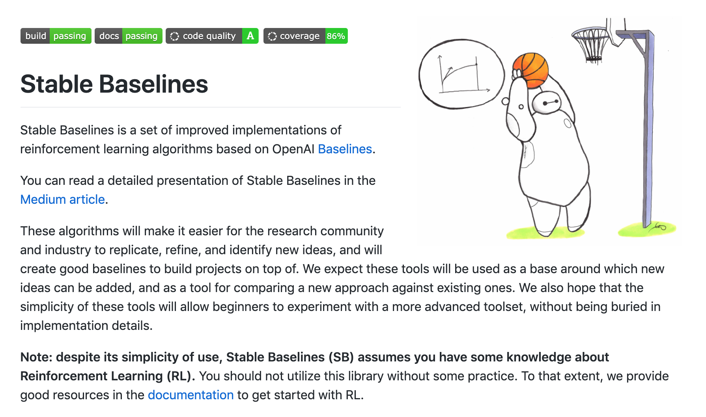
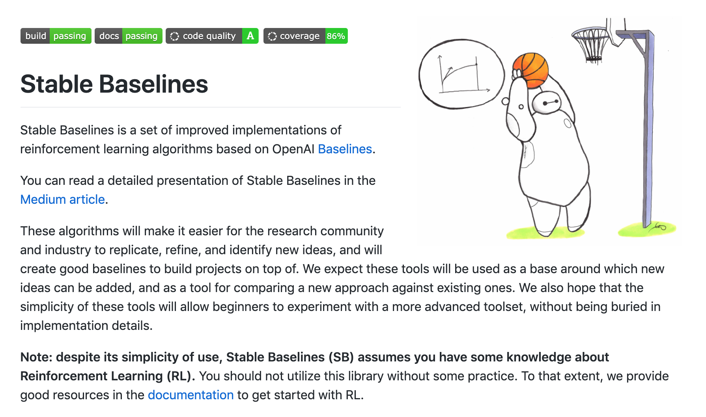

MineRL and Stable Baselines
 

In the summer of 2020, I undertook a new research project based in Minecraft. The goal was to teach an A.I. agent to learn how to play Minecraft through the custom OpenAI gym environment MineRL using reinforcement and imitaiton learning. OpenAI gym provides environments and frameworks of environments for you to implement your RL algorithms in. Using the Stable Baselines repo of reinforcement learning algorithms, namely Proximal Policy Optimization (PPO), I trained a agent for 3 million timesteps to learn how to chop a tree. Learning progress was slow, as Minecraft is an incredibly complex game from an A.I. standpoint. However, through imitaiton learning, where the A.I. learns from human demonstrations (MineRL provided 60 million frames of human gameplay), learning was expedited by a large factor.
While training, I learned Docker, an incredibly powerful tool to package software. I wrote a dockerfile for the code which can be found in my github repo. My A.I agent eventually learned to chop a tree, but still lots of work needs to be done. Unfornutaley, my intership experience was cut short - only six weeks as opposed to nine weeks like last year - due to COVID-19. I'm hoping to explore more in the world of reinforcement learning and solve some of its pressing problems.